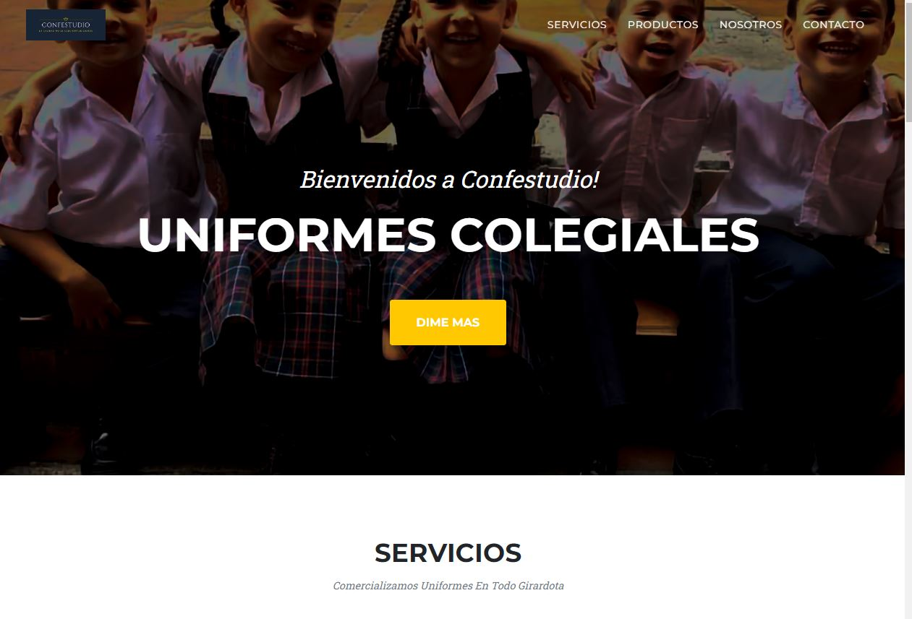
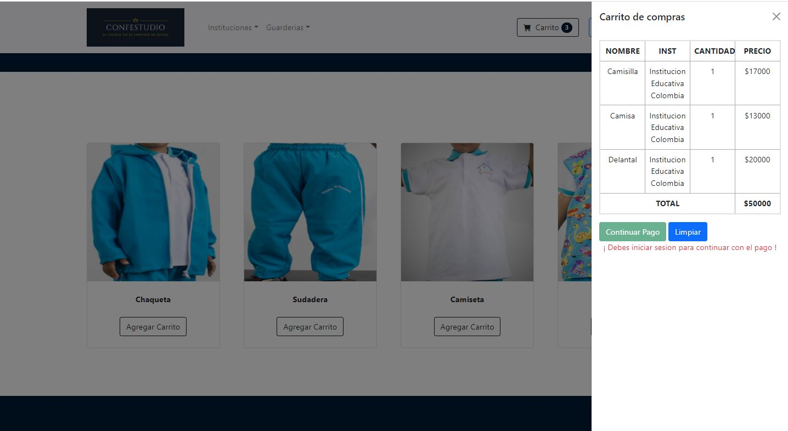
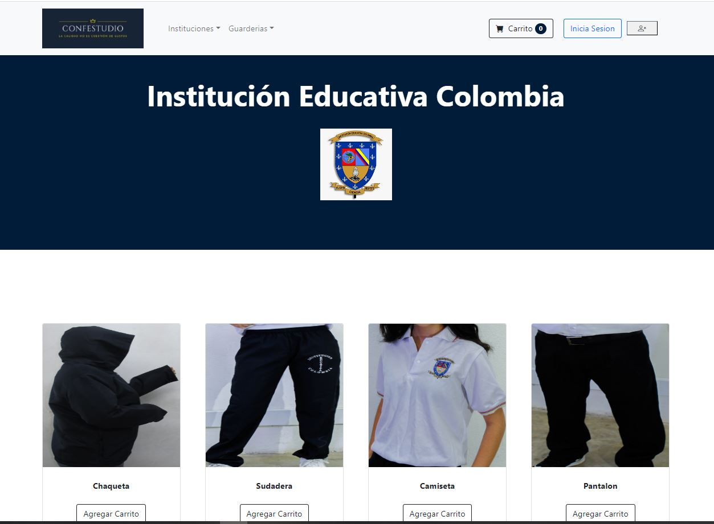

<div class="container mx-auto" style="max-width:100%;">


    <div class="contenedor">
        <div class="contenedor-cards">


            <div class="contenedor-card-item">
                <div class="contenedor-card-item-wrapper">
                    
                    <div class="contenedor-info">
                        <div class="info">
                            <p class="titulo">Proyecto de grados en el SENA</p>

                        </div>
                        <div class="fondo"></div>
                    </div>
                </div>
            </div>

            <!-- Modal -->
            <div class="modal fade" id="AmpliarImagen1" tabindex="-1" aria-labelledby="modalLabel" aria-hidden="true">
                <div class="modal-dialog">
                    <div class="modal-content">
                        <div class="modal-header">
                            <h5>¡Sistematizar las ventas de una microempresa de uniformes colegiales</h5>
                            <button type="button" class="btn-close" data-bs-dismiss="modal" aria-label="Close"></button>

                        </div>
                        <div class="modal-body">

                            
                            


                            <p>Como parte de mi grado en tecnología, tuve la oportunidad de participar en un emocionante proyecto centrado en el desarrollo de software. En este proyecto, utilicé PHP y MySQL para crear una solución innovadora que demostró
                                mis habilidades en programación y bases de datos. Además, asumí el diseño de la interfaz web, utilizando HTML, CSS y Bootstrap, para mostrar mi destreza en diseño web y capacidad para resolver problemas de manera efectiva.
                                Nuestro objetivo era sistematizar las ventas de un negocio, permitiendo a los usuarios agregar productos al carrito, registrarse para realizar pagos y acceder a través de un sistema de login para finalizar el pago utilizando
                                PayPal. El proyecto fue una valiosa experiencia que me permitió trabajar en un equipo colaborativo, enfrentar desafíos y alcanzar los objetivos establecidos. La implementación de un proceso de venta seguro y eficiente fue
                                una prioridad para garantizar una experiencia positiva para los usuarios.
                            </p>

                        </div>
                        <div class="modal-footer">
                            <a class="gif" href="https://github.com/Arlex296/ProyectoFinalSena">
                                

                            </a>
                            <button type="button" class="boton" data-bs-dismiss="modal">Salir</button>
                        </div>
                    </div>
                </div>
            </div>


        </div>
    </div>


</div>